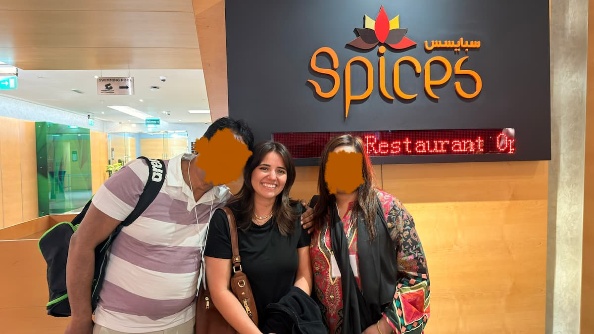
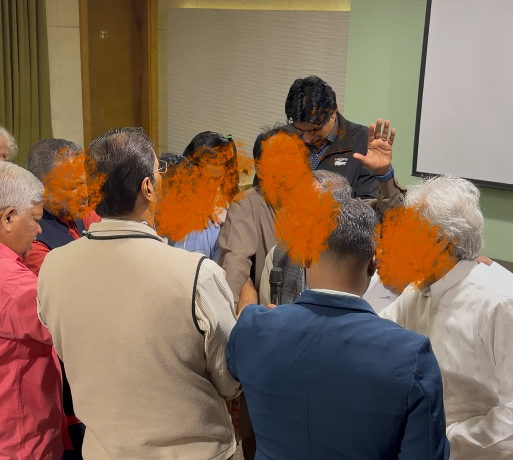
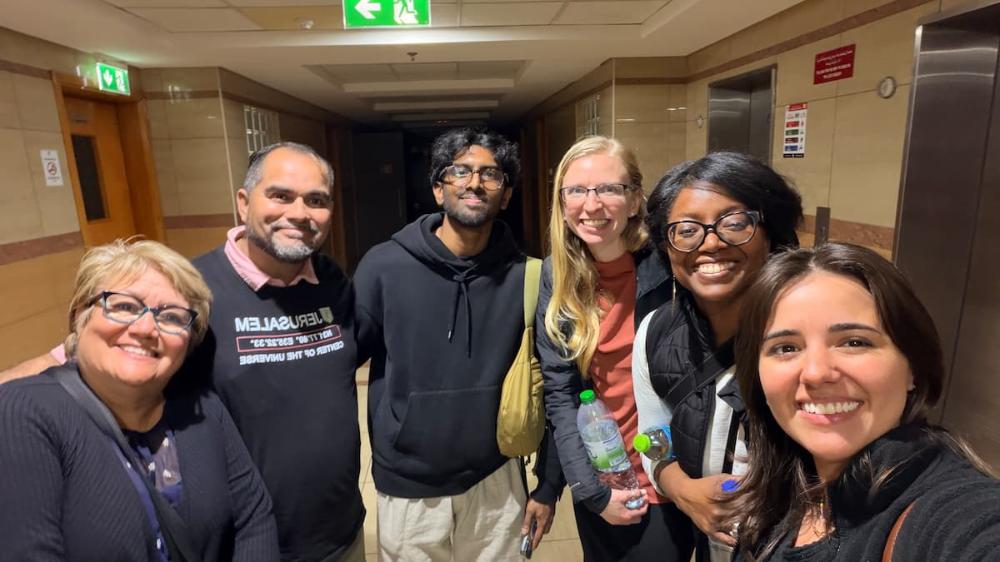
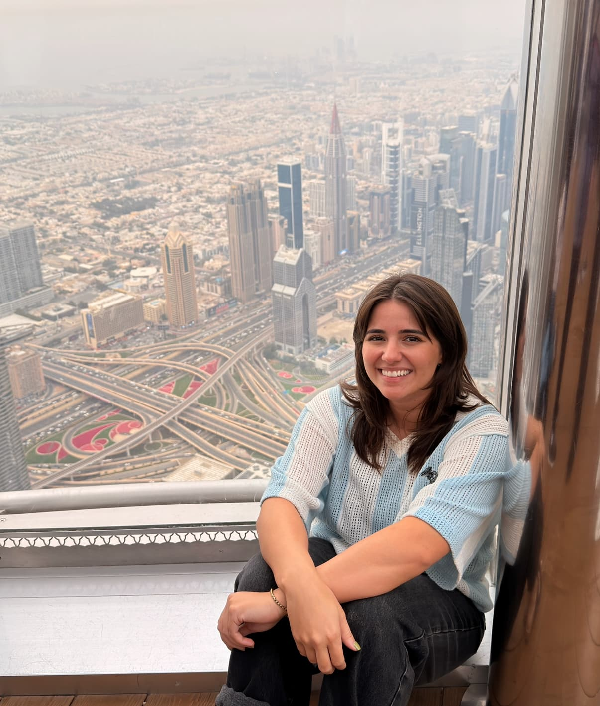
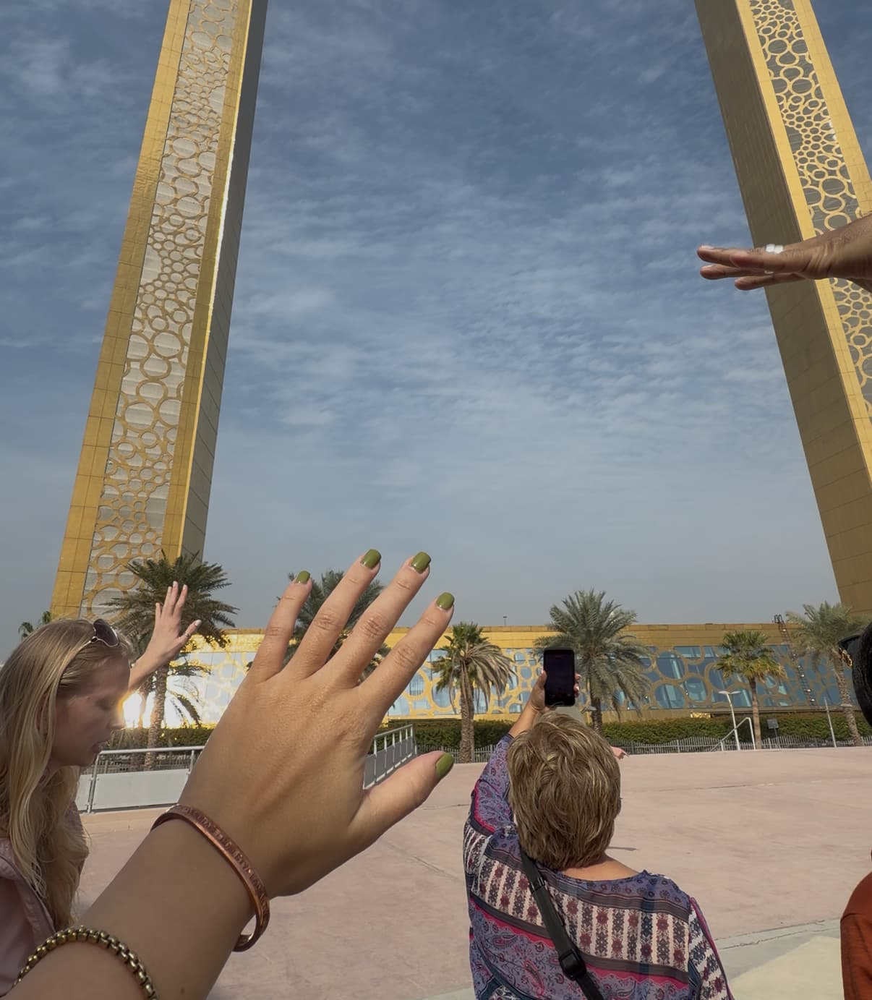
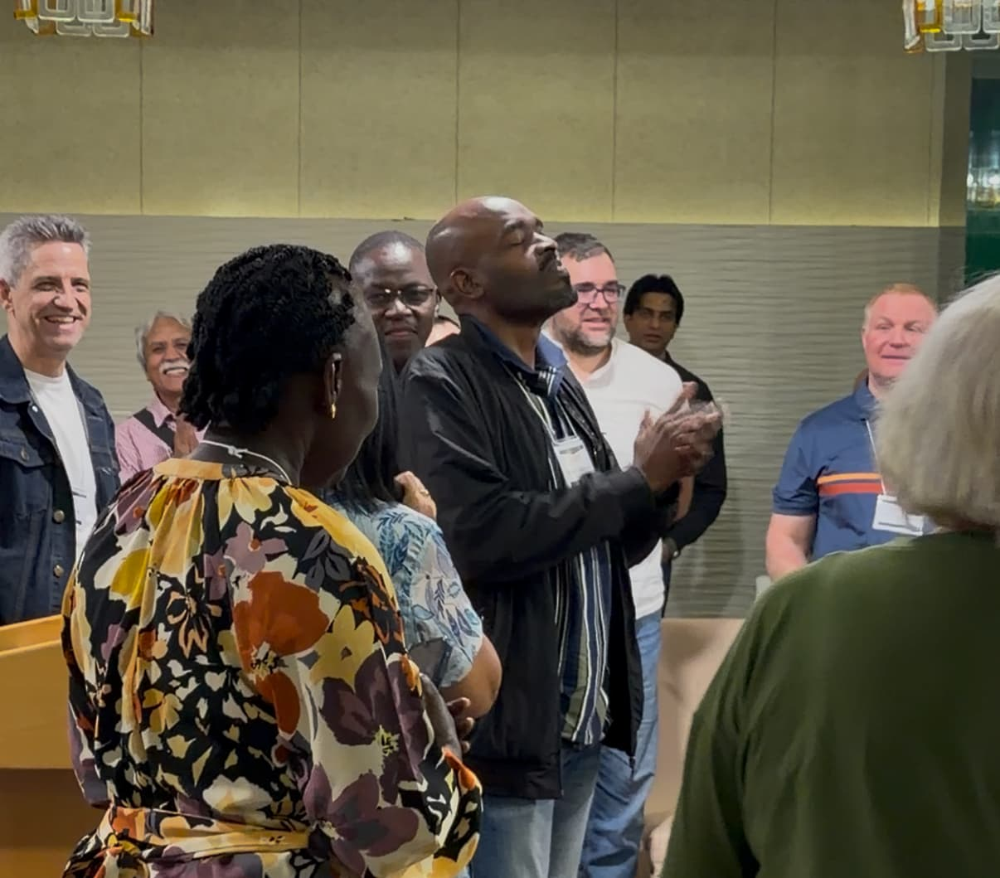
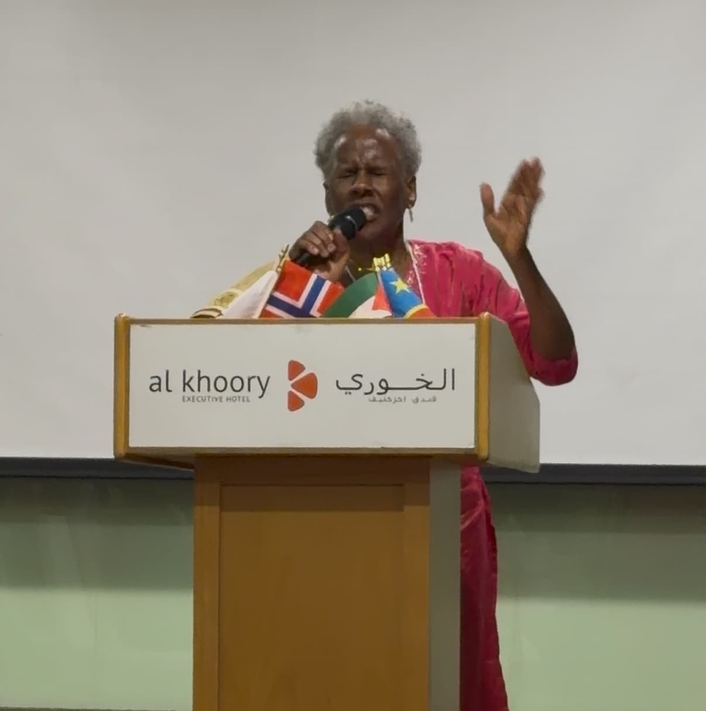
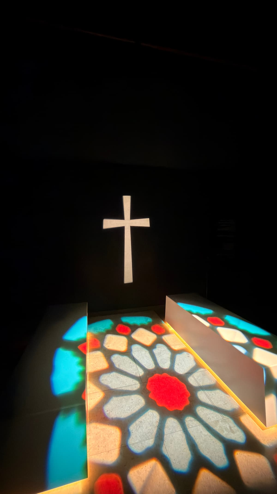
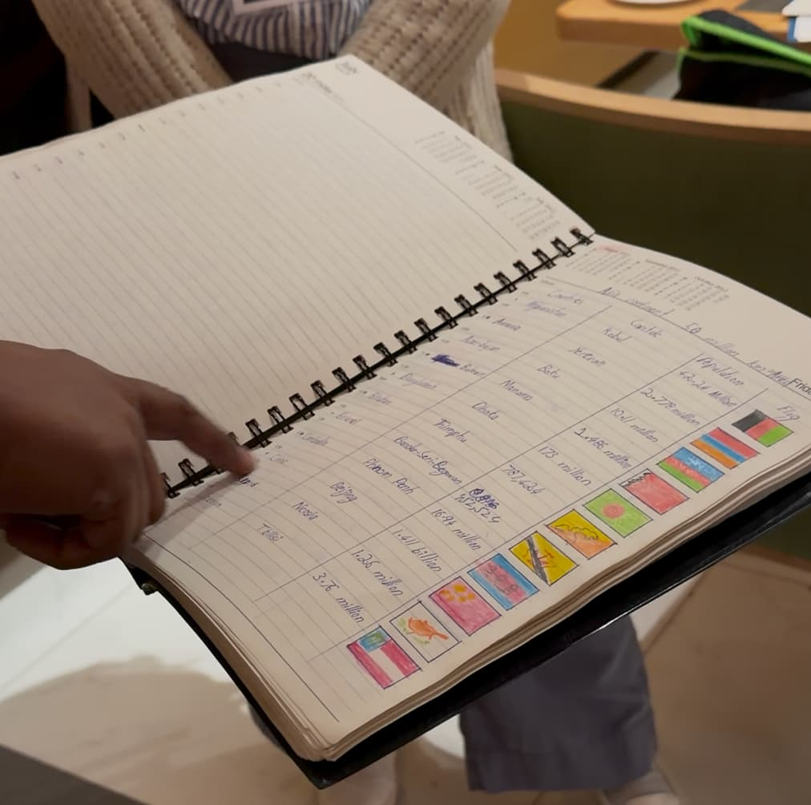
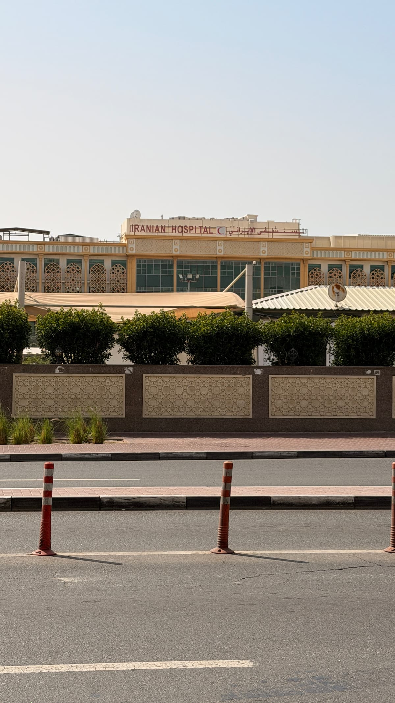

Prayer Request
These are my Pakistani parents who risk their lives everyday for the sake of the Gospel. PLease remember them when you're with the Father and pray for their family and minsitry.
Middle East
United with leaders and ministers all over the world for one purpose- to advance the Kingdom of Heaven. We came together for the "10 Days" summmit to prepare for intercession and repentance in our cities and nations.
Testimonies

These are my Pakistani parents who risk their lives everyday for the sake of the Gospel. PLease remember them when you're with the Father and pray for their family and minsitry.

A powerful moment of unity and intercession on behalf of their nations in the middle east. I saw for the first time what priest of the Lord are supposed to look like. The ones who cry out for the people of God between the entry room and the altar.

We visited the prayer room to intercede and encourage our brothers and sisters who are living here in this nation
Gallery










Partner With This Work